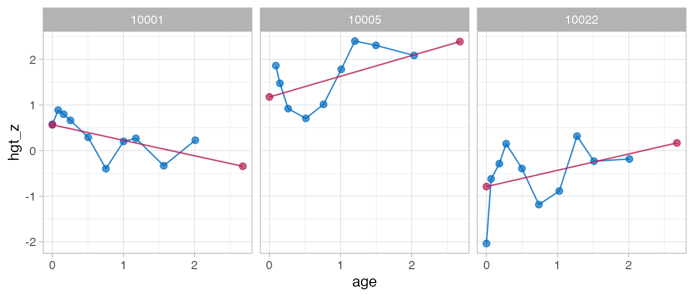
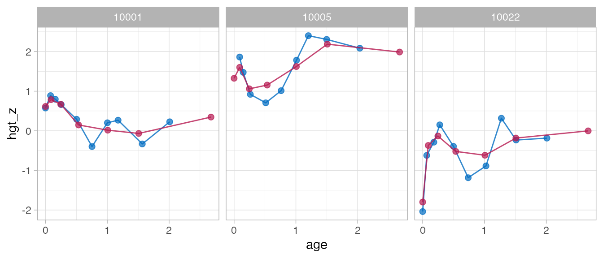

Background
The brokenstick package has three major interfaces:
- Up to version
brokenstick 0.62.1 (before May 2020)
- Up to version
brokenstick 1.1.1 (May 2020 - Nov 2021)
- Versions higher than
brokenstick 2.0.0 (Nov 2021 - now)
This document summarises the main changes in brokenstick 2.0.0. See “Help for old friends” in brokenstick 1.1.1 for an overview of the previous changes from 0.75.0 to 1.1.1.
Main changes
Function brokenstick() in version 2.0.0 sets the Kasim-Raudenbush sampler as the default method. The former method lme4::lmer() remains available by setting method = "lmer" argument.
Version 2.0.0 adopts the variable names of the coda package (e.g., start, end, thin, niter, and so on) and stores the results of the Kasim-Raudenbush sampler as objects of class mcmc.
For method = "kr" one may now inspect the solution of the sampler by standard functions from the coda package. For method = "lmer" we can apply functions from the lme4 package for merMod objects.
Version 2.0.0 redefines the brokenstick class. New entries include call, formula, internal, sample, light, data, imp and mod. Removed entries are knots (renamed to internal) and draws (renamed to imp). We may omit the newdata argument for the training data. Setting light = TRUE creates a small version of the brokenstick object. Objects of class brokenstick are not backwards compatible, so one should regenerate objects of class brokenstick in order use newer features in 2.0.0.
Version 2.0.0 conforms to classic model fitting interface in R. Renames the new_data argument to newdata to conform to predict.lm(). Methods plot() and predict() no longer require a newdata argument. All special cases of predict() updated and explained in documentation and examples.
Version 2.0.0 adds methods coef(), fitted(), model.frame(), model.matrix(), print() and summary() for the brokenstick object.
Simplifies algorithmic control. Renames control_brokenstick() to set_control() and removes a layer in the control list.
Minor changes
- Stabilises the
rgamma() calls in KR-algorithm for edge cases.
-
predict_brokenstick() can now work with the both (internal) training and (external) test data.
- Removes the superfluous
type argument from predict.brokenstick()
- Adds a function
get_omega() to extract the variance-covariance matrix of the broken stick estimates
- Adds choice
"dropfirst" to get_knots()
- Improves error messages of edge cases in
test-brokenstick_edge.R
- Perform stricter tests on arguments of
brokenstick()
- Introduces argument
warn_splines in make_basis() to suppress uninteresting warns from splines::bs()
- Removes superfluous
knotnames argument in make_basis()
- Argument
x in make_basis() is now a vector instead of a column vector
- Introduces new
xname argument in make_basis() to set the xname
Install legacy version
We recommend changing your code to reflect the above changes. If needed, version 1.1.1 can be installed as
Examples
Example 1: Fit model
Fit model, version 0.75.0 - 1.1.1:
data <- brokenstick::smocc_200
# formula interface
fit1 <- brokenstick(hgt_z ~ age | id, data)
# XY interface - numeric vector
# Deprecated in v2.0.0
fit2 <- with(data, brokenstick(age, hgt_z, id))
# XY interface - data.frame
# Deprecated in v2.0.0
fit3 <- with(data, brokenstick(data.frame(age), hgt_z, id))
# XY interface - matrix
# Deprecated in v2.0.0
tt <- as.matrix(data[, c(1, 2, 7)])
fit4 <- brokenstick(tt[, "age", drop = FALSE],
tt[, "hgt_z", drop = FALSE],
tt[, "id", drop = FALSE])
Fit model, version 2.0.0:
Example 2: Predict model
Predict model, version 0.75.0 - 1.1.1:
# predict at observed data
p1 <- predict(fit1, data)
# predict at knots
p2 <- predict(fit1, data, x = "knots")
# predict at both observed data and knots
p3 <- predict(fit1, data, x = "knots", strip_data = FALSE)
# predict knots, broad matrix
p4 <- predict(fit1, data, x = "knots", shape = "wide")
Predict model, version 2.0.0:
# predict at observed data
p1 <- predict(fit1)
# predict at knots
p2 <- predict(fit1, x = "knots")
# predict at both observed data and knots
p3 <- predict(fit1, x = "knots", strip_data = FALSE)
# predict knots, broad matrix
p4 <- predict(fit1, x = "knots", shape = "wide")
Example 3: Plot model
Plot trajectories, version 0.75.0 - 1.1.1:
ids <- c(10001, 10005, 10022)
plot(fit1, data, group = ids, what = "all")

Plot trajectories, version 2.0.0:
ids <- c(10001, 10005, 10022)
plot(fit1, group = ids, what = "all")

Further reading
-
Main functions
- Plot trajectories
- Orginal scale and \(Z\)-score scale
- 1-line model
- 2-line broken stick model
- 9-line broken stick model
- Prediction
- Subject-level analysis
-
Broken Stick Model for Irregular Longitudinal Data
- Irregular observation times
- Literature overview
- Definition of the model
- Interpretation of the model
- Estimation by
lmer and kr methods
- Software overview
-
brokenstick() for model fitting
-
predict() for trajectory plotting
- Conversion back and forth to the \(Z\)-score scale
- Predict growth curve of new subjects
- Assess the quality of the model
- Knot placement strategies
- Critical periods
- Time-to-time correlations
- Profile analysis
- Curve interpolation
- Multiple imputation
- Curve matching
- Discussion
-
Perfect model
- Properties of the perfect model
- Estimating time-to-time correlations